How to use this lesson
§0 · From last time. Cost model in hand. Now: build it yourself or buy a vendor product?
Business Scenario
Priya has three options: build Sherpa in-house, buy Lumen Agents (vendor from Lesson 1.1), or hybrid (buy framework, customise prompts).
Bridge to Topic
Build vs buy = total cost of ownership × lock-in × differentiation. Pick by long-term posture.
Mind Map

Mermaid source
mindmap
root((Build vs Buy))
Build
Full control
Differentiation
Higher TCO
Buy
Fast time-to-value
Vendor risk
Lock-in
Hybrid
Framework buy
Prompts build
Middle ground
Elaboration
4.1 The buy case
Vendor handles: infra, eval framework, model upgrades, integration. You handle: prompts, tools, business rules.
Time-to-value: weeks vs months. Cost: license + ops. Lock-in: high (switching costs are real).
4.2 The build case
You own everything. Differentiation: the IP is yours. Cost: 2-5× the buy cost in eng time. Lock-in: zero.
Build when: agent is core to your business; you have capacity; differentiation matters.
4.3 Hybrid (most common)
Buy framework (Anthropic, OpenAI, hosted MCP); build prompts and tools. Gets you 80% of buy's speed and 80% of build's differentiation.
For Sherpa: hybrid. Use Claude Agent SDK + Anthropic API; build Sherpa-specific prompts, tools, and eval in-house.
4.4 Vendor evaluation checklist
- SLA + uptime history
- Pricing transparency (no surprise scaling)
- Data residency
- Audit / compliance certifications
- Migration path out (if you need to leave)
- Roadmap alignment (will they still serve your use case in 3 years?)
Problem Statement
Apply the checklist to a vendor option you're evaluating.
Solution Walkthrough
The scoring matrix template in module-11/vendor-eval.xlsx.
Mathematical Foundation
7.1 TCO over 3 years
$$ \text{TCO} = \sum_t (\text{License}_t + \text{Ops}_t + \text{Eng}_t + \text{Migration Risk}_t) $$
Migration risk is non-zero even when you're not migrating — discount future flexibility.
Technical Deep-Dive
8.1 The "second-source" rule
For mission-critical agents: ensure you can route to a second provider. Multi-provider abstraction layer costs ~10% extra eng but eliminates single-vendor outage risk.
8.2 Open-source models
For privacy-critical or cost-critical workloads: self-hosted open-source models (Llama, Mixtral). Quality 80-90% of frontier. Cost 1/10. Ops complexity 5×.
8.3 The vendor lock-in calculation
Quantify the cost of switching vendors:
Switch cost = engineering time + parallel testing + cutover risk + retraining
For an agent currently on Anthropic, switching to OpenAI:
Engineering: 4 weeks × 2 engineers = 16 person-weeks (~$60K)
Parallel testing: 2 weeks × 1 engineer = $7.5K
Cutover risk: 5% chance of 1-month accuracy regression × $50K cost = $2.5K
Prompt re-tuning: 2 weeks = $7.5K
Total: ~$78K
Annual savings needed to justify (5-year payback): $16K/yr
If the vendor charges you $16K/yr above market: not worth switching. If they charge you $80K/yr above market: switch.
Build an abstraction layer (~10% extra eng cost upfront) to make this calculation always tilted toward "switching is cheap, vendors will compete for our business."
8.4 The framework choice (LangChain, LangGraph, CrewAI, raw)
Common choices:
| Framework | Strengths | Weaknesses | When to use |
|---|---|---|---|
| LangChain | Largest ecosystem, many integrations | High abstraction tax; hard to debug | Prototyping; many off-the-shelf integrations needed |
| LangGraph | Explicit state machines | Steeper learning curve | Multi-agent workflows with branching |
| CrewAI | Easy multi-agent | Limited control over individual agents | Quick multi-agent prototypes |
| OpenAI Agents SDK | Native to OpenAI | Vendor lock-in | OpenAI-only deployments |
| Claude Agent SDK | Native to Anthropic, minimalist | Vendor lock-in (less so than OpenAI) | Anthropic-only deployments |
| Raw / minimal | Full control, easy debug | All glue is yours | Production systems where you need to own the failure modes |
For Sherpa: raw, on Claude Agent SDK. Total custom code: ~2,000 lines. Easy to debug, full control over every decision, minimal vendor lock-in to swap to OpenAI.
8.5 The "build the boring stuff" rule
Frameworks often abstract the boring (and load-bearing) stuff: retry logic, observability, schema validation. When the framework's choices don't match yours, you fight it.
Rule: if you can't easily customise retry / cache / observability in 30 minutes with the framework, your framework is too opinionated. Either bend it or move on.
For Sherpa: started with a popular framework. Spent 3 weeks fighting it. Switched to raw + Claude Agent SDK. Total dev velocity doubled.
8.6 Vendor evaluation: the practical scorecard
Each vendor scored on 10 dimensions (1-5 scale):
1. Capability fit (does it solve our problem?)
2. Pricing (per-token cost + predictability)
3. Latency p95 (matches our SLA?)
4. SLA / uptime (financially backed?)
5. Data residency (matches our compliance?)
6. Security certifications (SOC 2, ISO 27001, etc.)
7. Roadmap alignment (active model improvements?)
8. Migration cost (easy to leave?)
9. Support quality (responsive on incidents?)
10. Ecosystem (libraries, tooling, community?)
Total weighted score = sum(weight_i × score_i)
Different orgs weight differently. For HSBC: data residency and security weighted 2×. For a startup: pricing and capability fit weighted 2×.
8.7 The hidden costs of "buy"
Vendor pitches highlight "fast time-to-value" but understate:
- Integration cost: even with great APIs, weeks of work to fit into your systems.
- Data egress fees: pulling data back from vendor to your warehouse can be $$.
- Vendor-defined eval: their eval set isn't yours; you'll still need your own.
- Lock-in expansion: vendors add features that work only with their platform; you adopt; switching gets harder.
- Price escalation post-adoption: standard B2B pricing pattern.
Budget 30-50% above quoted vendor price for first-year reality.
8.8 The framework migration story (Sherpa-shaped)
A small case study (composite): a team built on Framework A v1, which deprecated v1 in favour of v2 with breaking changes. Migration cost: 6 weeks for one engineer. During migration: agent's behaviour subtly changed, requiring re-tuning of prompts. Total cost of upgrade: ~$45K plus 2 weeks of degraded accuracy.
If you'd built on raw + provider SDK: no equivalent migration. You upgrade the SDK; everything keeps working.
Frameworks are a deal: speed-to-market for ongoing maintenance burden. Choose with eyes open.
What This Unlocks
- 11.3 templates from the three case-study orgs.